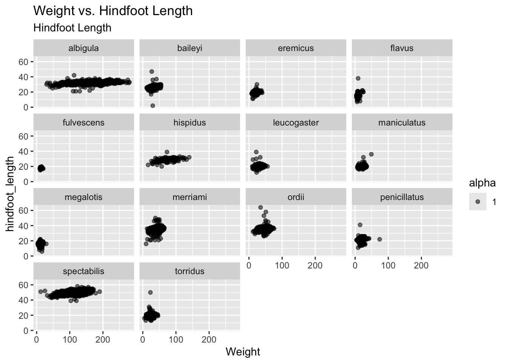
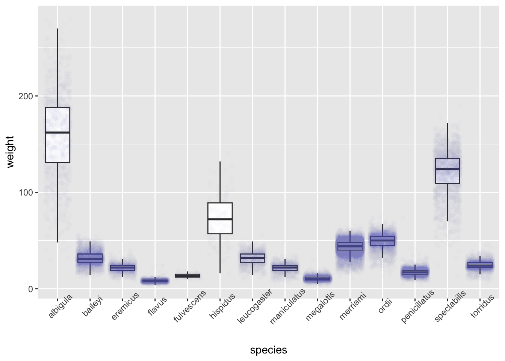

library("tidyverse")Lab 2: Exploring Rodents with ggplot2
Part 1: GitHub Workflow
Now that you have the Lab 2 repository cloned, you need to make sure these files are being tracked for your repository. To do this you need to:
- Click the “Git” tab in upper right pane
- Check the “Staged” box for every file listed
- Click “Commit”
- In the box that opens, type a message in “Commit message”, such as “Initialize lab 1”.
- Click “Commit”.
- Click the green “Push” button to send your local changes to GitHub.
Now you are ready to go! Remember, as you are going through the lab I would strongly recommend rendering your HTML and committing your after every question!
Seeking Help
Part of learning to program is learning from a variety of resources. Thus, I expect you will use resources that you find on the internet. There is, however, an important balance between copying someone else’s code and using their code to learn. Therefore, if you use external resources, I want to know about it.
If you used Google, you are expected to “inform” me of any resources you used by pasting the link to the resource in a code comment next to where you used that resource.
If you used ChatGPT, you are expected to “inform” me of the assistance you received by (1) indicating somewhere in the problem that you used ChatGPT (e.g., below the question prompt or as a code comment), and (2) paste the link to your chat (using the Share button from ChatGPT).
Additionally, you are permitted and encouraged to work with your peers as you complete lab assignments, but you are expected to do your own work. Copying from each other is cheating, and letting people copy from you is also cheating. Please don’t do either of those things.
Lab Instructions
The questions in this lab are noted with numbers and boldface. Each question will require you to produce code, whether it is one line or multiple lines.
This document is quite plain, meaning it does not have any special formatting. As part of your demonstration of creating professional looking Quarto documents, I would encourage you to spice your documents up (e.g., declaring execution options, specifying how your figures should be output, formatting your code output, etc.).
Setup
In the code chunk below, load in the packages necessary for your analysis. You should only need the tidyverse package for this analysis.
Data Context
The Portal Project is a long-term ecological study being conducted near Portal, AZ. Since 1977, the site has been used to study the interactions among rodents, ants, and plants, as well as their respective responses to climate. To study the interactions among organisms, researchers experimentally manipulated access to 24 study plots. This study has produced over 100 scientific papers and is one of the longest running ecological studies in the U.S.
We will be investigating the animal species diversity and weights found within plots at the Portal study site. The data are stored as a comma separated value (CSV) file. Each row holds information for a single animal, and the columns represent:
| Column | Description |
|---|---|
record_id |
Unique ID for the observation |
month |
month of observation |
day |
day of observation |
year |
year of observation |
plot_id |
ID of a particular plot |
species_id |
2-letter code |
sex |
sex of animal (“M”, “F”) |
hindfoot_length |
length of the hindfoot in mm |
weight |
weight of the animal in grams |
genus |
genus of animal |
species |
species of animal |
taxon |
e.g. Rodent, Reptile, Bird, Rabbit |
plot_type |
type of plot |
Reading the Data into R
1. Using the read_csv() function, write the code necessary to load in the surveys.csv dataset (stored in the data folder). For simplicity, name the data surveys.
library(here)
surveys <- read_csv(here("data", "surveys.csv"))2. What are the dimensions (# of rows and columns) of these data?
There are 30463 rows and 15 columns in the surveys dataset!
3. What are the data types of the variables in this dataset?
There are 7 character type variables, 7 double vector (quantitative) type variables, and 1 date variable
Exploratory Data Analysis with ggplot2
ggplot() graphics are built step by step by adding new elements. Adding layers in this fashion allows for extensive flexibility and customization of plots.
To build a ggplot(), we will use the following basic template that can be used for different types of plots:
ggplot(data = <DATA>,
mapping = aes(<VARIABLE MAPPINGS>)) +
<GEOM_FUNCTION>()Let’s get started!
Scatterplot
4. First, let’s create a scatterplot of the relationship between weight (on the \(x\)-axis) and hindfoot_length (on the \(y\)-axis).
ggplot(data = surveys,
mapping = aes(x = weight, y = hindfoot_length, alpha = 1)) +
geom_point() +
facet_wrap(~ species) +
labs(x = "Weight", title = "Weight vs. Hindfoot Length", subtitle = "Hindfoot Length")
We can see there are a lot of points plotted on top of each other. Let’s try and modify this plot to extract more information from it.
5. Let’s add transparency (alpha) to the points, to make the points more transparent and (possibly) easier to see.
Despite our best efforts there is still a substantial amount of overplotting occurring in our scatterplot. Let’s try splitting the dataset into smaller subsets and see if that allows for us to see the trends a bit better.
6. Facet your scatterplot by species.
7. No plot is complete without axis labels and a title. Include reader friendly labels and a title to your plot.
It takes a larger cognitive load to read text that is rotated. It is common practice in many journals and media outlets to move the \(y\)-axis label to the top of the graph under the title.
8. Specify your \(y\)-axis label to be empty and move the \(y\)-axis label into the subtitle.
Boxplots
ggplot(data = surveys,
mapping = aes(x = species, y = weight)) +
geom_boxplot(outlier.shape = NA) +
geom_jitter(color = "steelblue", alpha = 0.01) +
theme(axis.text.x = element_text(angle = 45))
10. Create side-by-side boxplots to visualize the distribution of weight within each species.
A fundamental complaint of boxplots is that they do not plot the raw data. However, with ggplot we can add the raw points on top of the boxplots!
11. Add another layer to your previous plot that plots each observation.
Alright, this should look less than optimal. Your points should appear rather stacked on top of each other. To make them less stacked, we need to jitter them a bit, using geom_jitter().
12. Remove the previous layer and include a geom_jitter() layer instead.
That should look a bit better! But its really hard to see the points when everything is black.
13. Set the color aesthetic in geom_jitter() to change the color of the points and add set the alpha aesthetic to add transparency. You are welcome to use whatever color you wish! Some of my favorites are “orange3” and “steelblue”.
Great! Now that you can see the points, you should notice something odd: there are two colors of points still being plotted. Some of the observations are being plotted twice, once from geom_boxplot() as outliers and again from geom_jitter()!
14. Inspect the help file for geom_boxplot() and see how you can remove the outliers from being plotted by geom_boxplot(). Make this change in your code!
Some small changes can make big differences to plots. One of these changes are better labels for a plot’s axes and legend.
15. Modify the \(x\)-axis and \(y\)-axis labels to describe what is being plotted. Be sure to include any necessary units! You might also be getting overlap in the species names – use theme(axis.text.x = ____) or theme(axis.text.y = ____) to turn the species axis labels 45 degrees.
Some people (and journals) prefer for boxplots to be stacked with a specific orientation! Let’s practice changing the orientation of our boxplots.
16. Now copy-paste your boxplot code you’ve been adding to above. Flip the orientation of your boxplots. If you created horizontally stacked boxplots, your boxplots should now be stacked vertically. If you had vertically stacked boxplots, you should now stack your boxplots horizontally!
ggplot(data = surveys,
mapping = aes(x = weight, y = species)) +
geom_boxplot(outlier.shape = NA) +
geom_jitter(color = "steelblue", alpha = 0.01) 
Notice how vertically stacked boxplots make the species labels more readable than horizontally stacked boxplots (even when the axis labels are rotated). This is good practice!
Conducting Statistical Analyses
Exploratory Data Analysis (EDA) is always a great start to investigating a dataset. Can we see a relationship between rodent weight and hindfoot length? How does rodent weight differ between species? After performing EDA, we can then conduct appropriate statistical analyses to formally investigate what we have seen.
In this section, we are going to conduct a one-way analysis of variance (ANOVA) to compare mean weight between the fourteen different species of rodents. If you would like a refresher on ANOVA, here’s a good chapter to read: https://openintro-ims.netlify.app/inference-many-means).
With an ANOVA, we have two hypotheses:
\(H_0\): The population mean weight is the same between all fourteen rodent species.
\(H_A\): At least one rodent species has a different population mean weight.
We’re going to use the aov() function to carry out an ANOVA.
17. Using aov(), complete the code below to carry out the analysis. You might want to look up the help documentation for aov().
species_mod <- aov(lm(weight ~ species, data = surveys))
summary(species_mod) Df Sum Sq Mean Sq F value Pr(>F)
species 13 34786303 2675869 19916 <2e-16 ***
Residuals 30449 4091063 134
---
Signif. codes: 0 '***' 0.001 '**' 0.01 '*' 0.05 '.' 0.1 ' ' 118. Based on the results of the ANOVA F-test, draw a conclusion in context of the hypotheses. Make sure to cite appropriate output from above.
Because the p-value is significant, we reject the null hypothesis. At least one species has significantly different mean weight compared to the others.
Lab 2 Submission
For Lab 2 you will submit only your HTML file. Your HTML file is required to have the following specifications in the YAML options (at the top of your document):
- have the plots embedded (
embed-resources: true) - include your source code (
code-tools: true) - include all your code and output (
echo: true)
If any of the options are not included, your Lab 2 or Challenge 2 assignment will receive an “Incomplete” and you will be required to submit a revision.
In addition, your document should not have any warnings or messages output in your HTML document. If your HTML contains warnings or messages, you will receive an “Incomplete” for document formatting and you will be required to submit a revision.